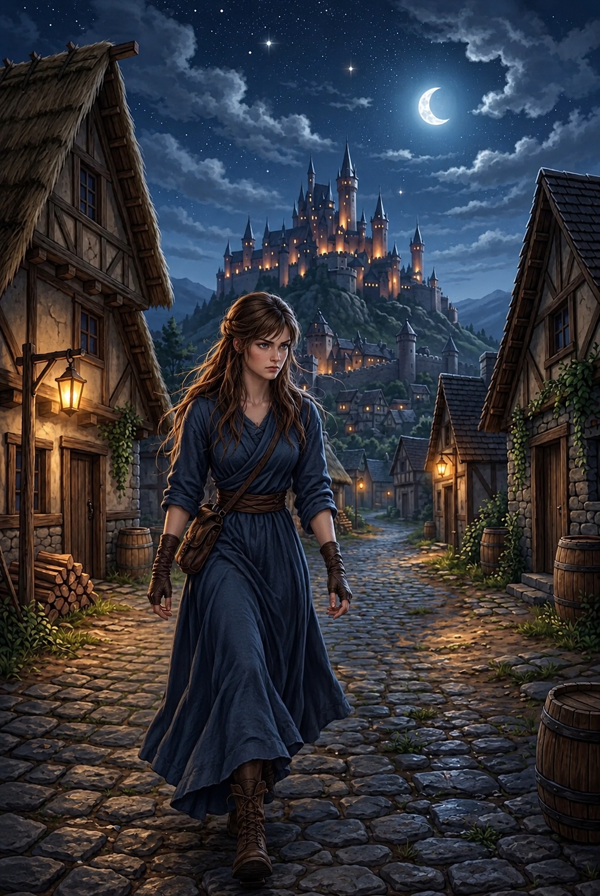

2/3
Camino actual: La Leyenda del Corazón
🔊 Narración:
Al mostrar la pluma en el pueblo, un anciano le revela la verdad: pertenece a los guardianes del Corazón de Aether, el cristal que le da magia al bosque.
Alguien oscuro está robando su poder. Consciente de la tragedia inminente, Ayla se niega a quedarse de brazos cruzados. Llena de determinación, decide tomar cartas en el asunto
♦ ───── ♦